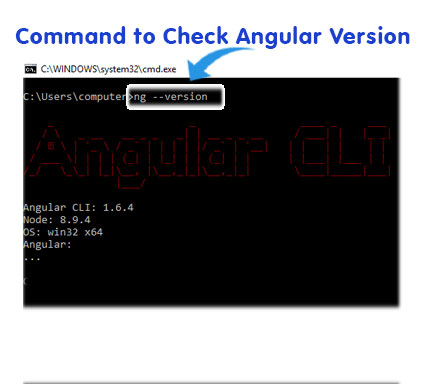
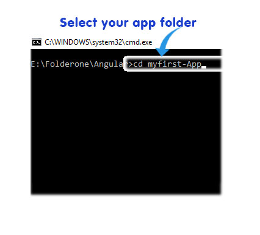

Time to install Angular!
1. Install Angular CLI and See the official Webiste Angular official website
Angular CLI
The Angular CLI is a command line interface tool that can create a project, add files, and perform a variety of ongoing development tasks such as testing, bundling, and deployment. 2. Check Angular CLI installed or not, Run "ng -version" in window command tool

3. Select your folder path and use cd path of your folder (Eg: E:\Folderone\Angular) or Select manually
To make it simple, "You should have basic knowledge of command prompt
4. Making an App in Angular with the help of Command Prompt, Use "ng new my-app" command
4. Select your folder where you made Angular App, Use cd Your-Folder-Name in command prompt

5. Run your App , Using "ng serve --open"
5. Successfully open in default browser